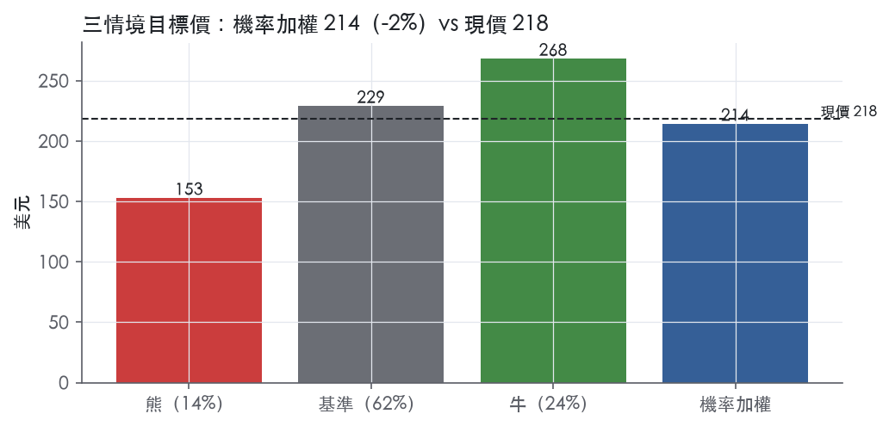
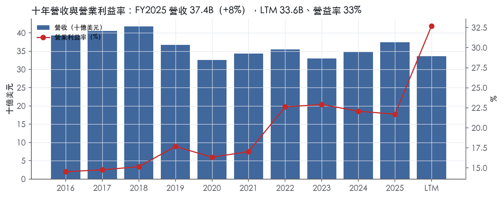
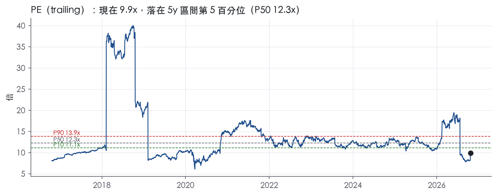
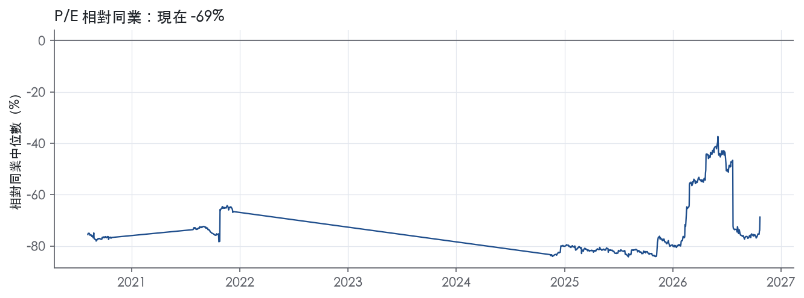
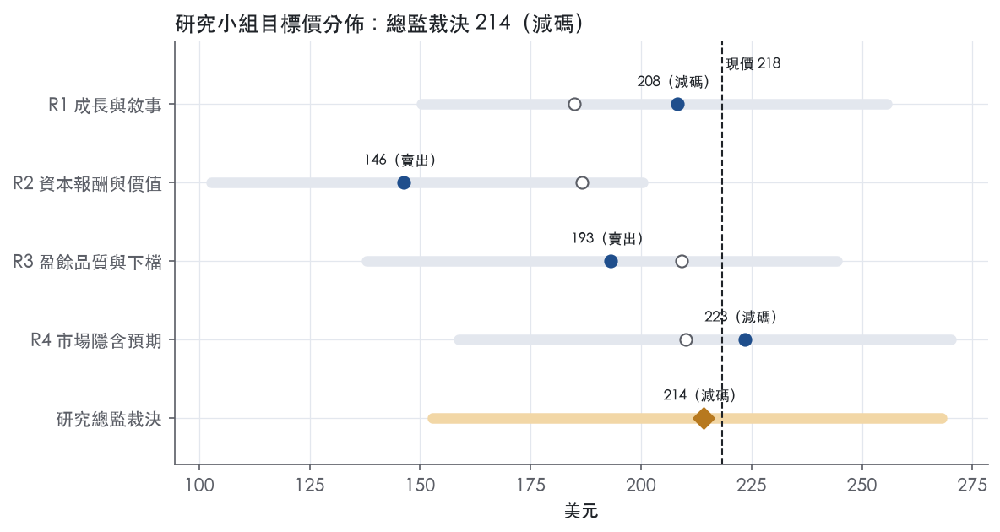
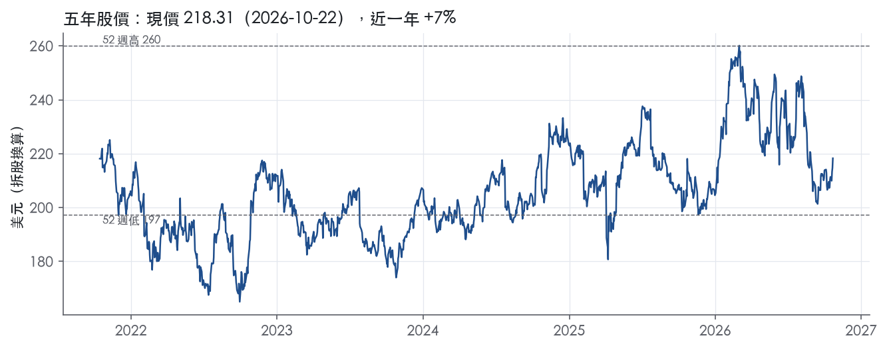

評等總表 › 工業 › HON
合理價已付足，中性，相對門檻減碼｜評等 減碼｜目標價 214
| 報告日 | 評等 | 目標價 | 當時股價 | 超額報酬 |
|---|---|---|---|---|
| 2026-10-22 | 減碼 | 214 | 218 | -10.1% |
| 2026-10-09 | 減碼 | 211 | 208 | -6.5% |
| 快評 | 動作 | 結論 |
|---|---|---|
| 2026-10-22 | 維持 | 落差屬基準錯位，有機成長高於我們假設 |
| 評等 | 減碼 |
| 12 個月目標價 | 214 美元 |
| 現價 | 218.31 美元（2026-10-22） |
| 預期報酬 | 股價 -1.9%＋股息 2.0%＝總報酬 +0.1%；同業籃門檻 10.1%，超額 -10.1% |
| 估值方法 | P/E 22.0x，套在第 5–8 季的EPS（也就是一年後的未來四季） |
| 三情境 | 熊 153／基準 229／牛 268 |
| 研究流程 | 四位研究員兩輪辯論＋研究總監裁決 |
| 資料來源 | SEC EDGAR XBRL、Tiingo、FRED（全免費） |
合理價已付足，中性，相對門檻減碼（研究總監裁決，四位研究員兩輪辯論後）
評等 減碼｜12 個月目標價 214 美元（總監三情境機率加權 228 與研究員中位數 201 各半）｜現價 218.31（2026-10-22）
預期報酬：股價 -1.9%＋股息 2.0%＝總報酬 +0.1%。同業籃門檻 10.1%，超額 -10.1%。
估值方法：P/E 22.0x，套在第 5–8 季的EPS（也就是一年後的未來四季）。三情境：熊 153（14%）／基準 229（62%）／牛 268（24%）。
立場中性而評等減碼：評等看的是「預期總報酬 0.1% − 同業籃門檻 10.1%」＝超額 -10.1%，不是絕對漲跌；中性但超額偏離門檻，代表情境機率或股利把報酬推離門檻。
評等說明：研究總監自己的機率加權目標價 228 美元對應「中立」；與研究員第二輪中位數 201 美元各半後為 214 美元，落入「減碼」。兩者只差一級，請把這檔讀成「中立～減碼」，正文裡總監的立場文字以「中立」寫成。
什麼會讓研究總監改變看法：FY2027 指引同時給有機 ≥5%、調整後 EPS 年增 ≥18% 且 FCF 不低於指引，倍數回到 24x 轉看多；FY2027 分部利益率指引中點 <21% 或 Q4'26 PAT 年減擴大，轉 R3 熊情境、倍數降到 18x 轉看空。
| 過去四季（實際，FY2026Q3） | 未來四季 | 第 5–8 季 | 第 9–12 季 | |
|---|---|---|---|---|
| 營收（B） | 33.6B | 20.8B | 21.9B | 23.0B |
| 營收成長 | 3.9% | -38.0% | 5.0% | 5.0% |
| 營業利益率 | 32.7% | 25.0% | 25.5% | 26.0% |
| EPS（美元） | 22.13 | 9.37 | 10.40 | 11.52 |
| EPS 成長 | 16.7% | -57.7% | 11.1% | 10.7% |
| 每股股息（美元） | 7.84 | 7.84 | 7.84 | 7.84 |
| P/E（現價） | 9.9x | 23.3x | 21.0x | 18.9x |
| 股息殖利率（現價） | 2.0% | 3.6% | 3.6% | 3.6% |
過去四季為申報數字；預測為研究總監的假設、程式計算。倍數與殖利率都用現價計算，用來看現價對應各期獲利的高低。
| 項目 | 上次（2026-10-13） | 這次（2026-10-23） | 變動 |
|---|---|---|---|
| 評等 | 減碼 | 減碼 | ＝ |
| 機率加權目標價（美元） | 211 | 214 | +1.5% |
| 超額報酬 | -6.5% | -10.1% | -3.5 pp |
| 目標倍數 | 22x | 22x | — |
| 未來四季營收成長 | -47.0% | -38.0% | +9.0 pp |
| 未來四季營益率 | 24.0% | 25.0% | +1.0 pp |
| 未來四季 EPS（美元） | 8.65 | 9.37 | +8.3% |
| 熊／基準／牛機率 | 16／66／18 | 14／62／24 | — |
程式計算；「未來四季」各自從當次報告的資料起點算。研究總監逐點說明見第八章「與上次報告比較」。
| 情境 | 機率（歷史） | 故事 | 未來四季營收成長 | 第 5–8 季營益率 | 倍數 | 目標價 | 股價漲跌 |
|---|---|---|---|---|---|---|---|
| 熊 | 14%（9%） | 風險表第 1、2 條：PAT 的 JM 稀釋與專案組合壓力延續、孤立成本清除停滯，分部利益率退回 FY2026 約 20.5% 並隨本行下行路徑下滑；觸發點 2027-02-15 前 FY2027 分部利益率指引中點 <21% | -39.5% | 23.5% | 18.0x | 153 | -30.0% |
| 基準 | 62%（64%） | 有機約 5%、分部利益率每年約 +50bps、股數 −1%，FY2027 指引讓 EPS 成長降回低雙位數，倍數由約 24x 收到 22x | -38.0% | 25.5% | 22.0x | 229 | 4.8% |
| 牛 | 24%（27%） | 2027-02-15 前 FY2027 指引給有機 ≥5% 與分部利益率續擴 ≥100bps、積壓維持 ≥7%，市場維持現行約 24x 不下修 | -38.0% | 26.5% | 24.0x | 268 | 22.8% |
目標價由程式依研究總監的驅動與倍數計算；機率由研究總監給定。括號內是歷史頻率：把這檔股票過去十年 12 個月報酬的波動形狀，置中在基準情境，結果落在各情境附近的比例。

四位研究員用不同方法各自估值，回應研究總監的質疑後交出第二輪，最後由總監逐點裁決。各研究員的主張見第七章，裁決理由見第八章，完整論證見《研究底稿》。
| 立場（一輪→二輪） | 加權目標價（一輪→二輪） | 評等（一輪→二輪） | 第二輪倍數 | 熊～牛目標價 | |
|---|---|---|---|---|---|
| R1 成長與敘事 | 中性→看空 | 185→208 | 賣出→減碼 | 24.0x | 150～256 |
| R2 資本報酬與價值 | 看空→看空 | 187→146 | 賣出→賣出 | 15.0x | 103～200 |
| R3 盈餘品質與下檔 | 中性→看空 | 209→193 | 減碼→賣出 | 24.0x | 138～244 |
| R4 市場隱含預期 | 看空→看空 | 210→223 | 減碼→減碼 | 21.5x | 159～270 |
| 研究總監裁決 | 中性 | 214 | 減碼 | 22.0x | 153～268 |
目標價由程式依各自的驅動與倍數計算；評等＝機率加權總報酬 − 同業籃門檻。
Honeywell 原本是一家橫跨航太、工業自動化、建築自動化與能源永續方案四大業務的多元化工業集團，FY2025 總營收 37.44B 美元，年增 7.8%。公司在 2025-2026 年進行了兩次重大拆分：2025 年 10 月 30 日完成 Advanced Materials 業務分拆為獨立上市公司 Solstice Advanced Materials¹；2026 年 6 月 29 日進一步將原 Aerospace Technologies 分部分拆為獨立上市公司 Honeywell Aerospace（代號 HONA），母公司重新定位並更名為 Honeywell Technologies，成為一家純粹的自動化公司²。公司自我定義為「global, pure-play automation company」，服務 building、industrial 與 process 三大領域客戶，底層由 Honeywell Technologies Accelerator 操作系統與 Honeywell Technologies Forge 智慧層支撐³。這意味著投資人在看財報時必須把 FY2025 10-K（仍含航太）與 2026 年各季新聞稿（不含航太）視為兩套不同範圍的財務口徑來對照。
FY2025 10-K 揭露的四個可報導分部中，Aerospace Technologies 規模最大，全年營收 17,510M 美元，其下商用航太原廠設備 2,513M 美元、商用航太售後市場 7,777M 美元、國防與太空 7,220M 美元¹；該分部是全球航太零組件、軟體與服務供應商，涵蓋輔助動力單元、推進發動機、航電系統、飛行安全與通訊導航硬體等¹。Industrial Automation 全年營收 9,401M 美元，下分感測與安全技術 1,171M 美元、生產力解決方案與服務 1,132M 美元、流程解決方案 6,165M 美元、倉儲與工作流解決方案 933M 美元¹；其中生產力解決方案與服務、倉儲與工作流解決方案兩個業務單位已於 2025 年底列為待出售資產¹。Building Automation 全年營收 7,367M 美元，產品 4,480M 美元、建築解決方案 2,887M 美元¹。Energy and Sustainability Solutions 全年營收 3,134M 美元，全數來自 UOP 業務單位，提供授權製程技術、設備、工程與催化劑服務¹。公司在 2025 年 10 月宣布，預計自 2026 年第一季起將 Industrial Automation 與 ESS 的部分業務單位重組為新分部 Process Automation and Technology，同時重新界定 Industrial Automation 的組成¹——這個新架構後來在 2026 年第二、三季新聞稿中落地，Honeywell Technologies（分拆航太後）的三個分部變成 Building Automation、Process Automation and Technology、Industrial Automation²。截至 FY2025 年底，公司積壓訂單 37,475M 美元，較 FY2024 的 32,596M 美元成長，公司預計約 57% 將於 2026 年轉為營收¹；分部別積壓訂單為 Aerospace Technologies 18,386M 美元、Building Automation 9,062M 美元、Industrial Automation 5,330M 美元、ESS 4,615M 美元¹。
客戶結構依分部分散：Aerospace Technologies 賣給飛機 OEM、商用航空公司、公務機營運商、國防與太空主承包商及美國政府¹；Industrial Automation 服務煉油/石化、生命科學、公用事業與倉儲物流客戶¹；Building Automation 服務建築業主與使用者；ESS／UOP 服務煉油、石化、低碳能源、天然氣與 LNG、工業方案五大終端市場垂直¹。美國政府銷售主要走 Aerospace Technologies，FY2025 對美國國防部銷售 4,209M 美元、對其他政府部門及機構銷售 543M 美元，合計 4,752M 美元，較 FY2024 的 4,266M 美元與 FY2023 的 3,358M 美元逐年成長¹。地理與製造佈局上，美國出口占總營收比重由 FY2023 的 13%、FY2024 的 14% 快速拉升至 FY2025 的 21%；非美國製造的產品與服務占比則維持在四成左右（FY2023 42%、FY2024 44%、FY2025 42%）¹。主要競爭對手依分部分散：航太面對 RTX、Safran、Thales、L3Harris、Garmin、Rolls-Royce；建築自動化面對 Johnson Controls、Schneider Electric、Siemens；工業自動化面對 Rockwell Automation、Emerson Electric、Zebra Technologies、TE Connectivity；能源與永續面對 Topsoe、Clariant、Flowserve¹。公司在各主要產品與服務線皆為重要競爭者，但坦言「considerable price competition」¹。
FY2025Q4 營收 9.76B 美元、年增 6.4%，營益率異常高達 57.0%（is/dv 對應 FY2025Q4 欄位），單季出現淨損 0.12B 美元、EPS -0.36，這段期間疊加 Solstice 分拆與分部重組的一次性會計影響，不宜視為常態經營表現。FY2026Q1 營收 9.14B 美元、年增 2.4%，營益率回落至 23.3%，淨利 0.82B 美元、EPS 2.58（is/dv 對應 FY2026Q1 欄位）；此兩季公司未提供對應新聞稿原文可供抄錄。FY2026Q2 是分拆航太的過渡季：合併口徑（含航太）營收 9,719M 美元，較去年同期 9,322M 美元成長 4%，營運利益率 17.9%、分部利益率 23.1%，EPS 17.83（因 Quantinuum 去合併一次性利得推升）、調整後 EPS 4.52²；若僅看分拆後的 Honeywell Technologies（不含航太），營收 5,187M 美元、年增 3%（有機成長 4%），分部利益率 19.0%（+100bps），調整後 EPS 1.95、年增 10%，營運現金流 563M 美元、自由現金流 456M 美元、年增 300%²。FY2026Q3 是分拆完成後首個完整季度：營收 4,994M 美元，較去年同期 4,929M 美元增加 1%（有機成長 7%），營運利益率 14.8%（+640bps）、分部利益率 21.3%（+370bps），EPS 2.40（因去年同期 Resideo 終止協議一次性利得而年減 20%）、調整後 EPS 2.27、年增 34%，自由現金流 688M 美元、年增 15%、轉換率 95%³。公司在 Q3 財報中上調全年指引：FY2026 營收展望由 19.8B-20.0B 美元上修至 20.0B-20.1B 美元，有機成長由 3%-4% 上修至 4%-5%，分部利益率展望維持前次高端約 20.5%，調整後 EPS 由 8.05-8.35 美元上修至 8.40-8.45 美元（年增 30%-31%）³。
公司執行長 Vimal Kapur 表示，Honeywell Technologies 在獨立後第一個季度延續三大分部的成長動能，加上在高成長垂直市場的地位提升，帶動 7% 有機營收成長，超過 6 月投資者日設定的三年目標，並讓調整後營業利益成長速度達營收成長的三倍以上³。公司在 10-K 中強調，正透過龐大裝機基礎的貨幣化來驅動差異化客戶成果與經常性收入成長，並以 Honeywell Accelerator 操作模式持續推動組合轉型¹；2025 年資本配置達 10.0B 美元用於資本支出、股利、庫藏股與併購，包括以 2.2B 美元收購 Sundyne，並宣布以 18.0 億英鎊收購 Johnson Matthey 催化劑技術業務¹。公司管理層稱其正引領工業領域從「自動化」邁向「自主化（autonomy）」的轉型³。整體看，Honeywell 正從一家併購堆疊的多元工業集團，透過連續兩次分拆蛻變為聚焦建築、工業與流程自動化的輕資產純粹股，航太與特材業務的退出讓剩餘業務的利潤率結構更一致、也更依賴軟體與裝機基礎的經常性收入敘事。短期而言，Process Automation and Technology 的毛利率因 Johnson Matthey 併購稀釋與專案組合波動而承壓，是觀察指引能否兌現的關鍵變數。長期則須持續追蹤分拆後三個分部能否維持兩位數有機成長與分部利益率擴張的雙重敘事。

Honeywell 分拆航太後的自動化本體評為窄護城河：我們有把握它的 ROIC 在未來 5 年以上仍高於資本成本，但沒有把握撐過 10 年。過去十年 ROIC 在有資料的 9 年中有 9 年高於資本成本，單看這組紀錄足以支撐「寬」。問題在於這是含航太的合併口徑，而航太售後市場是集團裡最硬的一塊護城河，這塊已經離開。留下的自動化業務靠裝機基礎的轉換成本和 UOP 製程授權撐住，強度明確，但達不到寬的標準。趨勢評為穩定：營益率近四年維持在 22.6%、22.9%、22.1%、21.7%（–FY2025），ROIC 下滑主要來自併購墊高的資本基數，不是定價權流失。
主要來源是轉換成本，次要來源是無形資產；成本優勢、網路效應、效率規模在 10-K 中找不到證據，不列入。
看得到，但看到的是含航太的舊 Honeywell，不是現在要估值的這家公司。
最大的威脅是價格競爭，其次是併購報酬不足。
目標倍數相對自動化同業（Emerson、Rockwell、Siemens、Schneider）應持平，不給溢價。理由是窄護城河只保證 5 年以上的超額報酬，而十年 ROIC 紀錄含已分拆的航太，不能直接拿來證明剩餘業務有溢價資格。也不建議用 HON 自身 5 年 P/E 中位數 12.3x當錨：歷史倍數對應的業務範圍不同，且 FY2026Q2 EPS 17.83含一次性利得，扭曲了 trailing P/E 9.9x（快照 trailing P/E）。
| 指標 | 最新 | 十年平均 | 標準差 | 最低 | 最高 |
|---|---|---|---|---|---|
| ROIC | 17.7% | 20.0% | 3.0% | 15.8% | 24.6% |
| 毛利率 | 36.9% | 34.4% | 3.0% | 30.5% | 38.5% |
| 營業利益率 | 21.7% | 18.5% | 3.3% | 14.5% | 22.9% |
| FCF 利潤率 | 14.5% | 14.1% | 1.6% | 11.2% | 16.5% |
| ROE | 29.1% | 29.3% | 8.1% | 8.6% | 39.0% |
程式計算。資本成本代理值（10 年債＋5%）：10.1%；ROIC 平均減資本成本：9.9%；ROIC 有資料的 9 年中，高於資本成本 9 年。
LTM 現金流品質指標全面紅燈，但主因是 FY2025Q4 的 Resideo 終止協議一次性現金 1.6B 美元滾入、滾出窗口造成的高基期效應，而非營運盈餘本身造假。公司於 2025年7月30日收到 Resideo 一次性現金 1.6B 美元⁴，這筆錢在 LTM 現金流分母/分子的滾動窗內造成 CFO/淨利與 FCF/淨利比率失真，季度資料顯示 FY2025Q3 CFO 高達 3.29B即反映此事件，隔一年同期比較基礎消失後即出現 LTM 比率驟降。
十年與近三年平均現金轉換正常，但 LTM 大幅落後，這是基期效應不是結構性壞轉。CFO／淨利 LTM 僅 0.28x，近三年平均 1.12x、十年平均 1.39x，FCF／淨利 LTM 0.14x 對比近三年平均 0.96x、十年平均 1.17x，顯示長期現金轉換紀錄良好，LTM 的塌陷集中在單一期間的比較基期問題。拆分完成後第一個完整季度（FY2026Q3）新聞稿顯示自由現金流轉換（非GAAP）達 95%³，這是比照 LTM 混合口徑更乾淨的訊號，顯示當期經營現金品質並未惡化。但 FY2026Q1 單季 CFO 為 -0.65B、FCF -0.87B，顯示拆分過渡期現金流季度間波動仍大，尚不能排除未來還有一次性項目干擾。
FY2025 GAAP 與非 GAAP 差距主要來自分割重組與一次性收益，公司對外溝通的調整項目大多屬於真實但非經常性的事件，不是把正常營運費用洗掉。EPS 橋接列出：商譽減損稅後影響 1.10 美元、分割相關成本稅後影響 0.54 美元、利息費用增加稅後影響 0.36 美元、環境負債估計增加稅後影響 0.25 美元，部分抵銷 Resideo 終止協議收益稅後 1.22 美元及營運利潤改善 0.56 美元⁴。商譽減損 724M 美元與待售資產減損 270M 美元⁴是真實的資產價值重估，不應視為一次性「乾淨」項目，反映原持有資產（PSS/WWS）獲利能力確實惡化。Other income 增加主要來自 Resideo 終止協議收益約 0.8B 美元⁴，這是現金收款對應的真實利得，但不會重複發生，估值時應剔除。石棉負債處置認列稅前損失 148M 美元，並以現金出資 1.4B 美元、沖銷負債 1.5B 美元換取未來免責⁴，此現金流出已被 Q3'26 新聞稿列入自由現金流的歷史調整項³，屬於一次性但是真實現金支出。最新一季非GAAP調整後EPS 2.27 美元對比GAAP EPS 2.40 美元下降20%主因去年同期一次性利得³，調整方向合理，但可比期混有一次性之間的比較本身仍會誤導年增率解讀。
槓桿绝對水平健康但趨勢向上，利息保障倍數已跌到黃燈臨界，資本回饋對淨利占比高但非失控。淨負債／EBITDA LTM 0.83x，近三年平均 2.03x，十年平均 1.28x，LTM 數字因拆分後總債務結構重整（FY2026Q3 總債務降至 16.59B）而大幅優於近三年平均，顯示分拆後資產負債表確實去槓桿，但三年平均的 2.03x 反映分拆前因收購與一次性現金需求而舉債上升的過程，淨負債從 FY2023 的12.35B升至FY2025的21.86B。利息保障倍數 LTM 7.37x、近三年平均 7.82x、十年平均 14.6x，長期下滑趨勢明顯，利息費用增加係因2024年8月發行長期債務⁴，利息費用從FY2023的749M美元升至FY2025的1,344M美元⁴。股利加回購占淨利比例LTM 52.2%、近三年平均113.1%、十年平均133.0%，長期以來靠舉債維持股東回饋的痕跡存在，但不算惡化到紅燈水準。稀釋股數變動LTM +0.2%，近三年平均-2.0%，顯示近期回購放緩，可能與分拆期資本支出優先順序調整有關。
估值應以非GAAP調整後EPS與segment profit為盈餘基礎，但要把Resideo終止協議收益0.8B美元⁴、商譽及資產減損合計約994M美元⁴視為真實但不可重複的項目逐一剔除，不要用GAAP原始LTM EPS 22.13直接套倍數，否則會嚴重低估本益比。近三年與十年現金轉換紀錄良好，LTM扭曲可解釋，故不需對核心盈餘做額外品質折價，但利息保障倍數持續下滑的趨勢應在加權資金成本假設中反映，槓桿本身尚不足以壓低可接受倍數上限。分拆後首季非GAAP自由現金流轉換95%³是較乾淨的現金訊號，建議後續季度驗證穩定性後再放寬對FCF的信心區間。
| 項目 | LTM | 近三年 | 十年 | 燈號 | 規則 |
|---|---|---|---|---|---|
| 營業現金流／淨利 | 0.28x | 1.12x | 1.39x | 紅 | ≥1.00x 綠、<0.80x 紅 |
| 自由現金流／淨利 | 0.14x | 0.96x | 1.17x | 紅 | ≥0.90x 綠、<0.60x 紅 |
| 應計比率（(淨利−CFO)／平均總資產） | 7.8% | -0.8% | -1.6% | 紅 | ≤0.0% 綠、>5.0% 紅 |
| SBC／營收 | -0.1% | 0.6% | 0.5% | 綠 | ≤3.0% 綠、>8.0% 紅 |
| 淨負債／EBITDA | 0.83x | 2.03x | 1.28x | 綠 | ≤1.50x 綠、>3.00x 紅 |
| 利息保障倍數（營業利益／利息） | 7.37x | 7.82x | 14.6x | 黃 | ≥8.00x 綠、<3.00x 紅 |
| 稀釋股數年變動 | 0.2% | -2.0% | -2.1% | 黃 | ≤0.0% 綠、>3.0% 紅 |
| （股利＋回購）／淨利 | 52.2% | 113.1% | 133.0% | 綠 | ≥50.0% 綠、<0.0% 紅 |
| 應收帳款成長 − 營收成長（FY2025） | -46.7pp | — | — | 綠 | ≤5pp 綠、>15pp 紅 |
| 存貨成長 − 營收成長（FY2025） | -79.3pp | — | — | 綠 | ≤5pp 綠、>15pp 紅 |
程式計算；燈號以 LTM（無則近三年平均）判定。
| 風險 | 觸發指標（看什麼數字、在哪裡看） | 對 EPS 的影響方向與粗略幅度 | 未來 12 個月發生機率（高／中／低） | 出處 |
|---|---|---|---|---|
| Process Automation and Technology 毛利率稀釋擴大（Johnson Matthey 併購＋專案組合） | 每季 8-K 分部表中 Process Automation and Technology 的 Segment Margin 年變動（bps）；FY2026Q3 已年減 210bps | 方向：負向；幅度：中（分部利益率已從 24.3% 降至 22.2%）³ | 高 | 8-K 財報新聞稿（2026-10-22） |
| 拆分執行與整合風險（分拆後孤立成本、IT 轉換、客戶關係斷點） | 每季 Operating Margin 與 Segment Margin 的落差（反映 stranded cost 清除進度）；10-K 中揭露的拆分相關揭露 | 方向：負向為主，若孤立成本清除順利則轉正向；幅度：中（FY2026Q3 Operating margin 14.8% 仍低於 Segment margin 21.3%，顯示孤立成本未完全消化）³ | 中 | ⁵＋³ |
| 美國政府／國防相關延遲與合約終止風險（含政府停擺） | 美國政府停擺公告日期；公司新聞稿或 10-K 中關於 purchase order 延遲的揭露 | 方向：負向；幅度：判斷為中（10-K 明確點名政府停擺可能造成無法報銷的勞務成本與付款延遲）⁵ | 中 | 10-K 年報 FY2025 Item 1A（風險因素） |
| 關稅與貿易政策變動衝擊成本與供應鏈 | 美國對中國及其他國家關稅稅率變動公告；公司原材料（銅、鎢鹽、鋁、鉬、鎳、鋼、鈦）採購成本 | 方向：負向；幅度：判斷為中（10-K 列為主要原物料成本風險但未提供具體財務數字）⁵ | 中 | 10-K 年報 FY2025 Item 1A（風險因素） |
| 利率敏感度：長期負債公允價值波動 | FRED 美國 10 年期公債利率（ust10y）變動；10-K 揭露利率一個百分點上升對長期負債公允價值的衝擊 | 方向：利率上升時負債公允價值減少 1,341M 美元（對帳面淨值影響，非直接 EPS）⁵ | 低 | 10-K 年報 FY2025 Item 1A（風險因素） |
風險一：Process Automation and Technology 毛利率稀釋。 這是目前五條裡唯一已經在最新一季財報裡實際發生、且公司自己承認會持續的風險。FY2026Q3 該分部利益率年減 210bps 至 22.2%，公司明確說明「driven by project mix and dilution from the acquisition of Johnson Matthey's Catalyst Technologies business」³。這個分部同時也是公司全年指引上修的受益者（整體 Segment Margin 指引上修至約 20.5%），但如果 Johnson Matthey 整合速度不如預期、或 LNG／石化專案組合持續偏向低毛利項目銷售，稀釋效果可能比管理層目前假設的更久、更深。監測方法很簡單：每季看這一行的 bps 變動，連續兩季擴大即為訊號。
風險二：拆分執行與孤立成本（stranded cost）清除進度。 Honeywell 在 18 個月內完成兩次分拆（Solstice Advanced Materials 於 2025-10-30、Honeywell Aerospace 於 2026 年中），10-K 明確點出「We face an increased level of risk during significant IT infrastructure transitions」⁵。FY2026Q3 財報顯示 Operating Margin（14.8%）與 Segment Margin（21.3%）仍有 650bps 的落差，公司把這部分差額歸因於「productivity, including elimination of stranded costs related to prior spin-offs and divestitures」尚在進行中³。這代表目前的调整後 EPS 高成長（+34% YoY）部分建立在孤立成本持續下降的假設上；若清除進度落後，GAAP 與 Non-GAAP 利潤的缺口會繼續壓低報表淨利，也會讓市場質疑調整後數字的含金量。
風險三：美國政府停擺與國防相關延遲。 10-K 原文寫明「any U.S. federal government shutdown could result in us experiencing delays or decreases in the number of purchase orders issued under our contracts with government agencies ... incurring substantial labor or other costs without reimbursement」⁵。雖然公司已分拆航太（Defense and Space 原屬 Aerospace Technologies），但 Industrial Automation 與 Building Automation 仍有對政府機構的銷售曝險，且分拆後的集團仍受美國政府採購規範約束。這條風險不可用營收成長率監測，但可用「聯邦政府是否進入停擺狀態」這個二元公告事件來追蹤。
風險四：關稅與貿易政策。 10-K 列出公司原材料成本集中在銅、鎢鹽、鋁、鉬（ESS）與鎳、鋼、鈦（原 Aerospace，現已分拆但工業自動化仍有金屬曝險）⁵，並指出「majority of the raw materials supply base... were under contract」但仍可能面臨關稅轉嫁失敗的風險⁵。由於資料包與新聞稿都沒有提供具體的關稅成本曝險金額，這條只能定性追蹤：每次美國對中國或其他國家宣布新關稅稅率，就是一次檢查點。
風險五：利率敏感度。 10-K 的市場風險揭露顯示，若利率全面上升一個百分點，長期負債公允價值會減少 1,341M 美元⁵。這主要影響資產負債表公允價值估計，不直接等於 EPS 衝擊，但在目前 ust10y 已達 5.13%（2026-10-21）的環境下，若公司需要再融資到期的 Term Loan（2.75B 美元，2027-05-07 到期）或 Fixed Rate Term Loan（1.0B 美元，2027-08-12 到期），新發債利率上升會直接提高利息費用、壓低淨利。這條機率定為低，因為公司現金頭寸與信評（S&P/Fitch Watch Negative、Moody's Stable）尚未顯示立即的融資壓力，但值得放進監測清單。
調整後 EPS 與 GAAP EPS 的缺口持續擴大，可能侵蝕市場對「adjusted」數字的信任。 FY2026Q3 GAAP EPS（2.40 美元）與調整後 EPS（2.27 美元）方向相反（GAAP 年減 20%、調整後年增 34%），公司將差異歸因於去年同期 Resideo 一次性利得，但隨著分拆相關的一次性調整項目（分拆成本、Quantinuum 相關現金流剔除等）持續出現在「adjusted」欄位，投資人需要盯緊每季非 GAAP 調整表的項目數量與金額是否擴大，而非僅看調整後 EPS 的年增率。
Industrial Automation 分部的通路庫存與 utilities meter 遞延訂單，是營收能見度最差的環節。 公司在 FY2026Q3 財報中坦言 Industrial Automation 產品銷售持平，主因是「industry-wide meter deployment deferrals in utilities」抵銷了 sensing 的雙位數成長³，但 10-K 風險因子章節並未單獨點名公用事業客戶的資本支出遞延風險。這個分部同期營收年減 23%（主因 WWS、PSS 業務剔除），base business 的實際動能需要額外拆解才能判斷，是財報表面數字容易誤導的地方。
現價 218.31 對應 trailing（過去四季）P/E 9.9x、EV/EBITDA 6.3x、EV/EBITA 6.9x、EV/Sales 2.4x、FCF 殖利率 1.4%。主要估值倍數 P/E 現在 9.9x，落在5 年區間第 5 百分位（P10／P50／P90 = 11.1x／12.3x／13.9x）。

把程式的機械基準預測放到現價下，市場付的前瞻倍數是：P/E（未來四季） 13.4x、P/E（第 5–8 季） 12.6x。反推 DCF 顯示市價隱含未來五年營收年成長 -3.4%（WACC 9.0%、終值成長 3.0%、FCF 利潤率 20.0%，SBC 不加回）。
| 倍數 | 現在 | 5 年 P10 | 5 年 P50 | 5 年 P90 | 現在分位 | 全期 P50 |
|---|---|---|---|---|---|---|
| P/E | 9.9x | 11.1x | 12.3x | 13.9x | 5.1% | 12.0x |
| EV/EBITDA | 6.4x | — | — | — | — | 9.8x |
| EV/EBITA | 6.9x | — | — | — | — | 10.5x |
| EV/EBIT | 7.3x | 8.9x | 10.8x | 12.6x | 0.0% | 10.7x |
| EV/Sales | 2.4x | 2.1x | 2.4x | 3.0x | 48.0% | 2.2x |
| P/S | 2.1x | 1.8x | 2.0x | 2.3x | 69.1% | 1.8x |
| P/FCF | 72.1x | 11.4x | 14.3x | 17.6x | 99.9% | 13.0x |
trailing 倍數（股價 ÷ 過去四季）；分位以每個交易日計算。
同業籃：RTX, SARO, HEI, TATT, SIF（SIC 3724 同業 6 家中，CY2025 營收最接近的 5 家）。評等門檻 10.1%：同業「倍數不變下持有一年」的隱含報酬中位數（＝ FCF 殖利率 ×(1＋g)＋g，g 為 5 年營收年複合成長並夾在 −2%～8%），每家夾在 0～15%、P/E 低於 5 倍視為資料可疑而排除，中位數再限制在 10 年債到 10 年債＋5% 之間（同業原始中位數 11.0%）；排除：TATT（隱含報酬算不出來）。
| 代號 | 市值 | 5 年營收 CAGR | 營益率 | ROIC | P/E | 5 年 P/E 中位數 | EV/EBITDA | P/FCF | 隱含報酬 |
|---|---|---|---|---|---|---|---|---|---|
| HON | 69.3B | 2.8% | 32.7% | 17.7% | 9.9x | 12.3x | 6.3x | 71.6x | 4.2% |
| RTX | 262.7B | 9.4% | 11.8% | 7.9% | 31.6x | 36.2x | 18.5x | 27.7x | 11.9% |
| SARO | 7.2B | 13.5% | 9.5% | 8.9% | 22.5x | — | 11.8x | 32.8x | 11.3% |
| HEI | 42.4B | 20.2% | 24.0% | 14.2% | 49.9x | 64.6x | 30.6x | 41.1x | 10.6% |
| TATT | — | 18.8% | — | 13.0% | — | — | — | — | — |
| SIF | 0.1B | -5.7% | 5.2% | 0.3% | 31.6x | — | 14.7x | 37.3x | 0.6% |
| 同業中位數 | 13.5% | 10.6% | 8.9% | 31.6x | 50.4x | 16.6x | 35.1x | 10.1% |
全部 trailing，程式以各公司 SEC XBRL 與 Tiingo 行情計算；第一列為本檔。
P/E 相對同業中位數：現在 -68.8%，過去 1 年平均 -65.5%、3 年 -73.4%、5 年 —；EV/EBITDA 相對同業中位數：現在 -61.7%，過去 1 年平均 -48.7%、3 年 -49.3%、5 年 —。

事後實現前瞻倍數帶（P/E，2018-11-19..2025-11-17）：P10／P50／P90 = 9.2x／11.4x／14.9x。它是每個交易日的股價除以之後四季實際實現的指標；一年後，今天的第 5–8 季正是那時的未來四季，所以這條帶是 12 個月目標價的同口徑倍數。因為用的是事後實際而非當時預期，過去成長超乎預期的公司這條帶會偏低。
程式的機械基準（成長率從過去四季年增率三年收斂到 6%、利潤率持平）用 事後實現前瞻 P/E P50 估值得到 198（-9.3%），市場現行前瞻倍數（現價 ÷ 基準 未來四季指標）一年後持平，套在基準 第 5–8 季指標得到 233。這兩個數字只是參考點，不是本報告的目標價；研究員對這個定價的回應在第七章。
下表是每位研究員第一輪（各自獨立）與第二輪（回應研究總監的質疑後）的結果。目標價全由程式依各自的假設計算。
| 立場（一輪→二輪） | 加權目標價（一輪→二輪） | 評等（一輪→二輪） | 第二輪倍數 | 熊～牛目標價 | |
|---|---|---|---|---|---|
| R1 成長與敘事 | 中性→看空 | 185→208 | 賣出→減碼 | 24.0x | 150～256 |
| R2 資本報酬與價值 | 看空→看空 | 187→146 | 賣出→賣出 | 15.0x | 103～200 |
| R3 盈餘品質與下檔 | 中性→看空 | 209→193 | 減碼→賣出 | 24.0x | 138～244 |
| R4 市場隱含預期 | 看空→看空 | 210→223 | 減碼→減碼 | 21.5x | 159～270 |
| 研究總監裁決 | 中性 | 214 | 減碼 | 22.0x | 153～268 |
目標價由程式依各自的驅動與倍數計算；評等＝機率加權總報酬 − 同業籃門檻。
分歧度：第一輪 加權目標價 185～210（區間＝現價的 12%）· 倍數 19～26x · 立場 中性×2、看空×2；第二輪 加權目標價 146～223（區間＝現價的 35%）· 倍數 15～24x · 立場 看空×4（方向一致）。

| 研究員 | 第二輪主張 | 堅持的理由 |
|---|---|---|
| R1 成長與敘事 | 相對偏空；調整後口徑22x，取自動化同業中點23x扣1x執行風險。 | 營運假設不改：營收成長5.5%，依據Q3有機成長7%與Q4指引5%–6%。 |
| R2 資本報酬與價值 | 偏空；投入資本報酬率17.7%對資本成本10.1%，只撐得起15x。 | Q3有機成長7%只是一季，工業自動化產品已因電表遞延持平。 |
| R3 盈餘品質與下檔 | 偏空；調整後口徑20x，依據投入資本報酬率高於資本成本10.1%加成長階段。 | 熊情境機率17%高於歷史，流程自動化分部利益率已連兩季年減。 |
| R4 市場隱含預期 | 偏空；21.5x，2026年分部利益率是水準躍升，一年後倍數會下修。 | 一年後EPS成長回到約10%，Q2的10%才是去掉一次性項目後的速率。 |
每位研究員的逐條回應與完整論證見《研究底稿》（HON_研究底稿_2026-10-23.docx）。
| 分歧點 | R1 | R2 | R3 | R4 | 什麼資料會分出勝負 |
|---|---|---|---|---|---|
| 1. EPS 基底：模型多扣分拆前利息怎麼校正 | 營益率留在分部口徑 22.2%，倍數×約1.09（假設缺口一成） | 營益率 +2.5pp，自承是對齊 FY2026 指引的校準值 | 營益率留在分部口徑 21.5%，反推模型 EPS≈調整後 0.84 倍，倍數÷0.84 | 營益率 +3.5pp：LTM 利息對應總債務 33.99–36.74B，分拆後 16.59B、現金 5.69B，假設淨利息 0.5B | FY2026 10-K 獨立公司利息費用（2027-02）；Q4'26 調整後 EPS 橋接 |
| 2. 目標倍數 | 22x 調整後口徑（自動化同業經驗區間 18–28x 中點 23x 扣 1x 執行風險） | 15x：(1−g/ROIC)/(r−g)，r 10.1%、g 5.5% | 20x 調整後口徑：ROIC 20% 對資本成本 10.1% 加 2–3 年成長階段 | 21.5x：市場現行倍數因 2027 下半年 EPS 成長回到約 10% 而下修 | 2027-02-15 前 FY2027 指引的調整後 EPS 年增與有機成長中點 |
| 3. Q5–Q8 經濟營益率（分部口徑） | 22.2% | 21.8% | 21.5% | 22.0% | FY2027 分部利益率指引中點；Q2'27 PAT 利益率年變動 |
| 4. Q5–Q8 營收成長 | 5.5%（Q3 有機 7%、Q4 指引 5–6%） | 5.5%（純有機） | 5.0%（電表遞延無結束證據） | 5.0%（積壓 +7% 撐轉換期，反轉放在 y3 4.5%） | 2027Q1–Q2 積壓訂單年增（排除處分） |
| 5. 熊情境倍數與距離 | 20x 模型尺度（約 18x 調整後），離基準 −27% | 12x，離基準 −30%，基準已離現價 −32.7% | 21x 模型尺度（約 17–18x 調整後），−29% | 18x，−30% | 置中分布 ≤−30% 頻率 0%；FY2027 利益率指引中點是否 <21% |
1. EPS 基底：選 R4（+3.5pp）。 四人都承認模型按 LTM 持平的非營業扣項來自分拆前的債務期（總債務 FY2026Q2 33.99B → FY2026Q3 16.59B，／FY2026Q3；FY2025 利息費用 1,344M⁴），分歧只在幅度。R4 是唯一從分拆後資產負債表出發、並承認分部口徑營益率未扣總部費用而做反向抵銷的人。R3 自己反推「模型 EPS 約為調整後 0.84 倍」，反過來證明 R1 的「缺口一成」太小——R1 的 24x 模型尺度實際只等於約 20x 調整後口徑，低於他想給的 22x。R2 的 2.5pp 自承是校準值，不是從利息缺口推出來的。採「校正放在營益率、倍數直接用調整後口徑」的路徑，是為了和上次報告（NTM 營益率 24.0%、22x）同一口徑比較；代價是程式的 EBITDA、FCF 被墊高，EV/EBITDA 與 P/FCF 交叉驗證本次不採用。
2. 目標倍數：own，22x eps@q5_q8。 自家帶（12.3x、事後實現前瞻 P50 11.4x）分母含航太，SIC 3724 籃（RTX 31.6x、HEI 49.9x）是航太售後市場的倍數，兩者都不是分拆後自動化公司的錨，護城河章與 R2、R3、R4 結論相同；基準模型的市場隱含 pe_NTM 13.4x 也因基準 EPS 含航太而不可用。可用的錨只有一個：市場今天對分拆後本體付的倍數——R4 以 21.5x 乘 Q5–Q8 EPS 得 225.39，略高於現價 218.31，換算到一年後市場看的 NTM 約 24x（判斷，與上次報告反推一致）。方向上接受 R4：FY2026 調整後 EPS +30–31%³的三個來源（孤立成本消除、淨利息下降、營業利益 +79% 對營收 +1%）都是水準調整，Q2 獨立口徑調整後 EPS +10%²才是去掉這些之後的速率，一年後市場看到的 NTM 成長會從三成降到低雙位數，倍數會收。幅度取 22x 而非 21.5x：我的 y2 5.0%、分部利益率 +50bps、股數 −1% 合起來的 EPS 成長高於 R4 假設的「約 10%」（判斷），且 Q3 有機 7% 高於六月投資者日三年目標、指引兩次上修（快評：成長降檔論削弱），不支持收到 21.5x 以下；22x 同時是 R1 自動化同業經驗區間中點 23x 扣 1x 執行風險的位置（經驗判斷，非資料包數字），也是上次裁決的倍數。R2 的 15x 退回：單階段公式的結果幾乎全由 r−g 4.6pp 決定，忽略 2027–28 年的成長階段；他列的個股理由（航太售後 7,777M¹離開、PAT 年減 210bps、IA 產品持平）在市場付約 24x 的今天全都已知，解釋不了四成折價；他的營業利益誤差中位數 −2.7%、72% 勝過基準，偏離基準要更強的證據。R3 的 20x 與我的差距是成長階段加分的大小，屬判斷，我以可觀測的市場與同業錨為準。
3. Q5–Q8 經濟營益率：選 R4，22.0%（輸入值 25.5%）。 FY2026 分部利益率指引已至前次高端約 20.5%、擴張約 290bps³，Q3 單季 21.3%；孤立成本清除仍在進行（風險表第 2 條，營運利益率 14.8% 對分部 21.3% 的落差），JM 稀釋在 2027Q3 基期消失（第 1 條）。從 FY2026 出口水準每年約 +50bps，到 Q4'27–Q3'28 約 22%。R3 的 21.5% 等於 Q3 之後不再擴張，與指引上修到高端矛盾；R1 的 22.2% 在 PAT 稀釋「as expected」延續下略高，且 R1 營業利益誤差中位數 +1.8% 偏高。
4. Q5–Q8 營收成長：選 R3，5.0%／5.0%。 積壓近 19B、年增 7%、Q4 有機指引 5–6%³支持中個位數；但 Q3 的 7% 是公司自己說高於三年目標的數字，PAT 專案 +14%（LNG／石化）有週期性，IA 產品持平（電表遞延），本行 GDP 1.7 低於官方 2.2 且實質利率壓資本支出。R1、R2 的 5.5% 靠單季 7% 外推；R4 的 y3 4.5% 假設專案週期反轉，訂單還沒有這個證據。研究總監營收誤差中位數 −0.1%，不需系統性修正。
5. 熊情境倍數：選 R3 的機制、18x（調整後口徑）。 熊是「水準躍升守不住」：分部利益率退回約 20.5%，倍數回到價值驅動式穩態 17–18x；R3 的 21x 模型尺度經他的 0.84 換算就是這個位置，R4 的 18x 相同。R2 的 12x 要同時成立 r 10.1% 與 g 3.5%，離他的基準 −30%（程式），而他的基準已離現價 −32.7%；這檔股票十年 12 個月報酬離中位數 ≤−30% 的頻率是 0%，不能當熊情境中心。
利率、漂移與總經。 R2、R3 第二輪已撤回以 10 年債壓倍數的寫法；但 R3 仍把「2.75B 與 1.0B 定期貸款在 5.19% 環境再融資」列為熊機率高於歷史的理由——再融資成本已在門檻與現價裡，風險表第 5 條評為低，不接受它抬高熊機率。漂移：R1 向中位數靠攏 96%，但變動全來自 G1、G2 兩條附證據的修正（總債務下降、利息費用、風險表第 1、2 條），經濟意義上的 22x 沒變，不退回；R3 靠攏 71% 同樣是 Q1、Q2 的資本成本更正，不退回；R2、R4 反向移動。drift_rejections 為空。總經偏離：四人都未申報，全部以本行基準情境（GDP 1.7、10 年債 5.19、銅 13,543 持平）為準；敏感度表的銅（t 0.0）與利差（t −1.1）不可靠，不據以調整基準。
與機械基準不同的驅動（其餘沿用基準）：
目標倍數 22x eps @ q5_q8（裁決 2）。口徑：套在含利息校正、約等於調整後口徑的 Q5–Q8 模型 EPS；同口徑的事後實現前瞻帶本次不用（分子分拆後、分母含航太）。相對 SIC 3724 同業的 −68.8% 折價，是 GAAP LTM EPS 22.13 含 Q2 Quantinuum 一次性利得造成的假折價，不解讀；相對自動化同業持平、不給溢價（護城河章）。
| 情境 | 機率 | 來源 | 與基準不同的驅動 | 倍數 | 一句話 |
|---|---|---|---|---|---|
| 牛 | 24% | R4 牛（股數改用我的 −1.0%） | y2／y3 6.5%；營益率 y2／y3 26.5%／27.5%（經濟 23%／24%） | 24x | 2027-02-15 前 FY2027 指引給有機 ≥5% 與分部利益率續擴 ≥100bps、積壓維持 ≥7%，市場維持現行約 24x 不下修 |
| 基準 | 62% | 總監 | — | 22x | 有機約 5%、分部利益率每年約 +50bps、股數 −1%，FY2027 指引讓 EPS 成長降回低雙位數，倍數由約 24x 收到 22x |
| 熊 | 14% | R3 熊（營益率加 3.5pp 與我同尺度、倍數改用調整後口徑 18x） | y1 −39.5%、y2 1.0%、y3 4.0%；營益率 24.0%／23.5%／24.0%（經濟 20.5%／20.0%／20.5%） | 18x | 風險表第 1、2 條：PAT 稀釋延續、孤立成本清除停滯，分部利益率退回 FY2026 約 20.5% 並隨本行下行路徑下滑；觸發點 2027-02-15 前 FY2027 分部利益率指引中點 <21% |
機率從歷史出發：程式對 R4 牛的對照是 24%、對 R3 熊是 13%，我的牛熊取自同一來源，距離相近（待程式核對）。熊 13 → 14、牛對應下調，理由是本行總經下行 27% 高於上行 23%，且風險表第 1 條評為高；幅度在 2 個百分點內。牛 > 熊與這檔股票的歷史一致，不延續本部 22 份報告熊高於牛的慣例。
差距在倍數，不在盈餘：基準情境的 Q5–Q8 EPS 大致就是指引兩次上修後、每年約 +50bps 擴張的調整後軌道（判斷），我們沒有比公司保守；差別是一年後市場付 22x 而不是現在的約 24x，因為 2026 年的 +30% 是孤立成本與利息的水準躍升，不是速率。立場中性（基準情境價格報酬中個位數加股息率 2.0%），程式依 10.1% 門檻算出的評等會是減碼：門檻來自 5 年營收 CAGR 中位數 13.5% 的航太籃，不是自動化公司的機會成本；改用資本成本代理值 10.1% 結果相同（R3），所以減碼成立，但這是「不及門檻」而非「高估」。程式的股息率 2.0% 來自分拆前 LTM，獨立公司股利未揭露（假設偏高），只會讓總報酬更低，不改變評等。
現價 218.31 → 點估目標價 229 → 機率加權目標價 228 → 目標價 214，差距拆成五段：成長順延 +14 美元（市場現行倍數 13.4x 一年後持平、獲利照機械基準）；倍數差 +148 美元（總監倍數 22.0x vs 市場持平倍數 13.4x，同一機械基準預測）；盈餘差 -152 美元（總監預測的第 5–8 季EPS 0.0B vs 機械基準 0.0B，同一倍數）；情境不對稱 -1 美元（機率加權減點估）；研究小組平均 -13 美元（總監機率加權 228 與研究員第二輪中位數 201 各半）。各段相加等於目標價減現價。本階段未接賣方共識，差距以市場隱含預期為對照。
| 驅動 | 機械基準 | 研究總監 | 差異 |
|---|---|---|---|
| 未來四季營收成長 | 4.6% | -38.0% | -42.6 pp |
| 第 5–8 季營收成長 | 5.3% | 5.0% | -0.3 pp |
| 第 9–12 季營收成長 | 6.0% | 5.0% | -1.0 pp |
| 未來四季營益率 | 22.7% | 25.0% | +2.3 pp |
| 第 5–8 季營益率 | 22.7% | 25.5% | +2.8 pp |
| 第 9–12 季營益率 | 22.7% | 26.0% | +3.3 pp |
| D&A／營收 | 4.8% | 4.8% | ＝ |
| 資本支出／營收 | 2.9% | 2.6% | -0.3 pp |
| SBC／營收 | -0.1% | 0.5% | +0.5 pp |
| 稅率 | 20.0% | 20.0% | ＝ |
| 股數年變動 | -0.1% | -1.0% | -0.9 pp |
研究總監只寫偏移，未寫的沿用基準。
| 期 | 營收 | 成長 | 營益率 | 營業利益 | EBITDA | EBITA | 淨利 | EPS | FCF | 期末淨負債 |
|---|---|---|---|---|---|---|---|---|---|---|
| 未來四季 | 20.8B | -38.0% | 25.0% | 5.2B | 6.2B | 5.6B | 3.0B | 9.37 | 3.5B | 10.6B |
| 第 5–8 季 | 21.9B | 5.0% | 25.5% | 5.6B | 6.6B | 6.0B | 3.3B | 10.40 | 3.9B | 10.4B |
| 第 9–12 季 | 23.0B | 5.0% | 26.0% | 6.0B | 7.1B | 6.4B | 3.6B | 11.52 | 4.2B | 9.9B |
程式依上表的驅動計算；季度用最近四季季節性分攤；不含營運資金變動。
估值方法：P/E 22.0x，套在第 5–8 季的EPS（也就是一年後的未來四季）。研究總監目標倍數的錨：市場今天對分拆後 NTM 調整後 EPS 付約 24x（由 R4 程式結果 225.39≈現價反推，判斷）；因 2026 年 +30–31% 屬孤立成本與利息的水準躍升、2027 起成長降回低雙位數而收 2 轉；與自動化同業經驗區間中點 23x 扣 1x 執行風險一致（R1）；套在含 3.5pp 利息校正、約等於調整後口徑的 Q5–Q8 模型 EPS；自家帶與 SIC 3724 籃口徑不符不用。
計算：EPS（第 5–8 季） 10.40 × 22.0x → 點估目標價 229（4.8%）；隱含 P/E（未來四季）24.4x、P/E（第 5–8 季）22.0x、EV/EBITDA（第 5–8 季）12.4x、FCF 殖利率（第 5–8 季）5.4%。
總監三情境機率加權目標價 228，研究員第二輪中位數 201，兩者各半＝目標價 214；預期報酬 股價 -1.9%＋股息 2.0%＝總報酬 +0.1%；減評等門檻 10.1%（同業籃隱含報酬中位數（RTX, SARO, HEI, TATT, SIF））＝超額報酬 -10.1% → 評等 減碼（超額 >+15% 買進、+5～+15% 加碼、±5% 中立、−5～−15% 減碼、<−15% 賣出）。同一份資料重開研究小組，超額約有正負四個百分點的雜訊（一個標準差，二十檔實測）；以此估計，評等落在其他級距的機率約二成。
| 情境 | 機率 | 未來四季成長 | 第 5–8 季成長 | 第 5–8 季營益率 | EPS（第 5–8 季） | 倍數 | 目標價 |
|---|---|---|---|---|---|---|---|
| 熊 | 14% | -39.5% | 1.0% | 23.5% | 8.49 | 18.0x | 153 |
| 基準 | 62% | -38.0% | 5.0% | 25.5% | 10.40 | 22.0x | 229 |
| 牛 | 24% | -38.0% | 6.5% | 26.5% | 11.17 | 24.0x | 268 |
| 主張 | 驗證日 | 看哪個數字 | 門檻 |
|---|---|---|---|
| FY2027 指引顯示 EPS 成長降回低雙位數但仍為雙位數、有機成長維持中個位數 | 2027-02-15 | FY2027 調整後 EPS 指引中點年增；FY2027 有機成長指引中點 | >=12%；>=4.5% |
| FY2027 分部利益率指引延續每年約 +50bps 的擴張 | 2027-02-15 | FY2027 segment margin guidance midpoint | >=21.5% |
| 積壓訂單成長足以支撐 Q5–Q8 有機 5% | 2027-08-15 | 2Q2027 backlog YoY（排除 WWS、PSS 處分） | >=5% |
| JM 稀釋在基期消失後 PAT 利益率不再年減 | 2027-11-15 | 3Q2027 Process Automation and Technology segment margin YoY change | >=0bps |
到期由程式結算（第 5 階段帳本）。
內文上標數字對應下列公司申報文件；未標上標的分析與判斷，是研究小組的觀點。報告中的每個數字都經程式逐一核對資料包或原文。
| 期 | 營收 | 成長 | 毛利率 | 營益率 | EBITDA | 淨利 | EPS | CFO | FCF | ROIC | 淨負債 | 稀釋股數 |
|---|---|---|---|---|---|---|---|---|---|---|---|---|
| FY2016 | 39.3B | — | 30.9% | 14.5% | 6.7B | 4.8B | 12.42 | 5.5B | 4.4B | — | 6.4B | 0.4B |
| FY2017 | 40.5B | 3.1% | 30.6% | 14.8% | 7.1B | 1.5B | 4.00 | 6.0B | 4.9B | 15.8% | 7.1B | 0.4B |
| FY2018 | 41.8B | 3.1% | 30.5% | 15.2% | 7.5B | 6.8B | 17.96 | 6.4B | 5.6B | 24.6% | 5.3B | 0.4B |
| FY2019 | 36.7B | -12.2% | 33.7% | 17.7% | 7.6B | 6.1B | 16.82 | 6.9B | 6.1B | 22.5% | 5.6B | 0.4B |
| FY2020 | 32.6B | -11.1% | 32.1% | 16.4% | 6.3B | 4.8B | 13.44 | 6.2B | 5.3B | 17.7% | 7.2B | 0.4B |
| FY2021 | 34.4B | 5.4% | 35.9% | 17.0% | 7.0B | 5.5B | 15.82 | 6.0B | 5.1B | 17.7% | 8.1B | 0.4B |
| FY2022 | 35.5B | 3.1% | 37.0% | 22.6% | 9.2B | 5.0B | 14.54 | 5.3B | 4.5B | 23.7% | 9.5B | 0.3B |
| FY2023 | 33.0B | -6.9% | 37.5% | 22.9% | 8.6B | 5.7B | 16.94 | 5.3B | 4.6B | 22.2% | 12.3B | 0.3B |
| FY2024 | 34.7B | 5.2% | 38.5% | 22.1% | 8.8B | 5.7B | 17.42 | 6.1B | 5.2B | 18.2% | 20.7B | 0.3B |
| FY2025 | 37.4B | 7.8% | 36.9% | 21.7% | 9.5B | 4.7B | 14.72 | 6.4B | 5.4B | 17.7% | 21.9B | 0.3B |
SEC XBRL；每股數據已依拆股換算到現在股數基準。EBITDA 空白 = 該年無形攤銷在 companyfacts 中缺 tag。
| 期 | 期末 | 推導 | 營收 | 毛利率 | 營益率 | EBITDA | 淨利 | EPS | CFO | FCF | 現金 | 總債務 |
|---|---|---|---|---|---|---|---|---|---|---|---|---|
| FY2023Q4 | 2023-12-31 | Q4 | 5.8B | 33.6% | 21.9% | 1.3B | 1.3B | 3.78 | 3.0B | 2.9B | 7.9B | 20.4B |
| FY2024Q1 | 2024-03-31 | 8.2B | 39.5% | 25.7% | 2.4B | 1.5B | 4.46 | 0.4B | 0.2B | 11.8B | 25.3B | |
| FY2024Q2 | 2024-06-30 | 8.6B | 39.1% | 25.7% | 2.5B | 1.5B | 4.72 | 1.4B | 1.1B | 9.6B | 27.9B | |
| FY2024Q3 | 2024-09-30 | 8.8B | 38.8% | 26.0% | 2.7B | 1.4B | 4.32 | 2.0B | 1.7B | 10.6B | 30.8B | |
| FY2024Q4 | 2024-12-31 | 9.2B | 36.7% | 11.8% | 1.3B | 1.3B | 3.92 | 2.3B | 2.2B | 9.9B | 31.0B | |
| FY2025Q1 | 2025-03-31 | 8.9B | 38.8% | 22.4% | 2.3B | 1.4B | 4.44 | 0.6B | 0.4B | 9.7B | 32.8B | |
| FY2025Q2 | 2025-06-30 | 9.3B | 39.3% | 22.8% | 2.5B | 1.6B | 4.90 | 1.3B | 1.1B | 10.3B | 36.5B | |
| FY2025Q3 | 2025-09-30 | 4.9B | 65.6% | 17.6% | 1.1B | 1.8B | 5.71 | 3.3B | 3.2B | 12.9B | 37.0B | |
| FY2025Q4 | 2025-12-31 | 9.8B | 35.6% | 57.0% | 6.2B | -0.1B | -0.36 | 1.2B | 0.6B | 12.3B | 34.6B | |
| FY2026Q1 | 2026-03-31 | 9.1B | 38.7% | 23.3% | 2.5B | 0.8B | 2.58 | -0.7B | -0.9B | 12.0B | 36.7B | |
| FY2026Q2 | 2026-06-30 | 9.7B | 37.6% | 23.0% | 2.6B | 5.7B | 17.83 | 1.3B | 1.0B | 8.8B | 34.0B | |
| FY2026Q3 | 2026-09-30 | 5.0B | 40.4% | 21.3% | 1.3B | 0.7B | 2.08 | 0.1B | -0.1B | 5.7B | 16.6B |
流量項目由 10-Q 的年初至今數拆成單季；Q4 = 年度 − 九個月。

本報告由 equity-desk 多代理系統產出，建置中版本，僅供內部研究與方法驗證，不構成投資建議。所有數字以 datapack.json 為準。